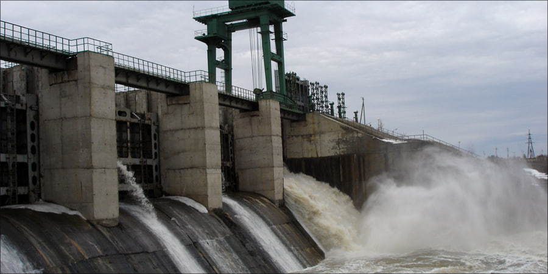
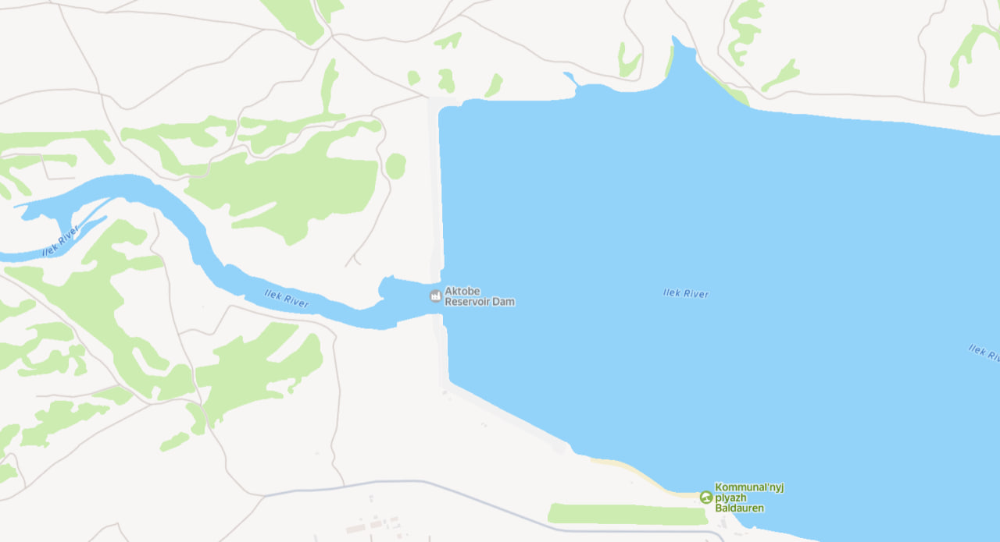
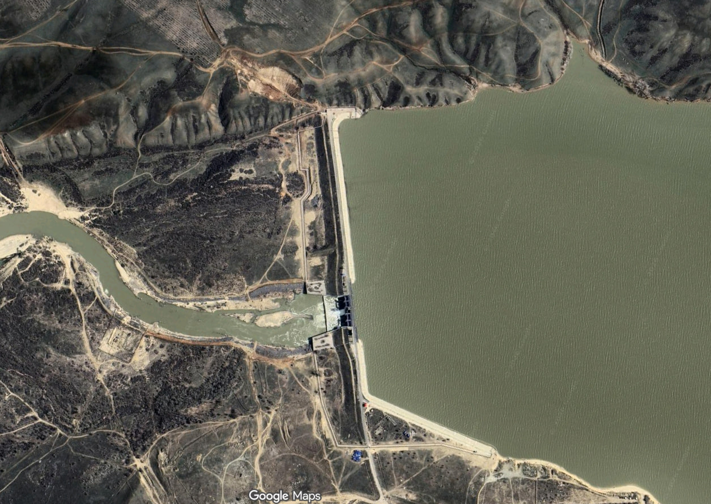
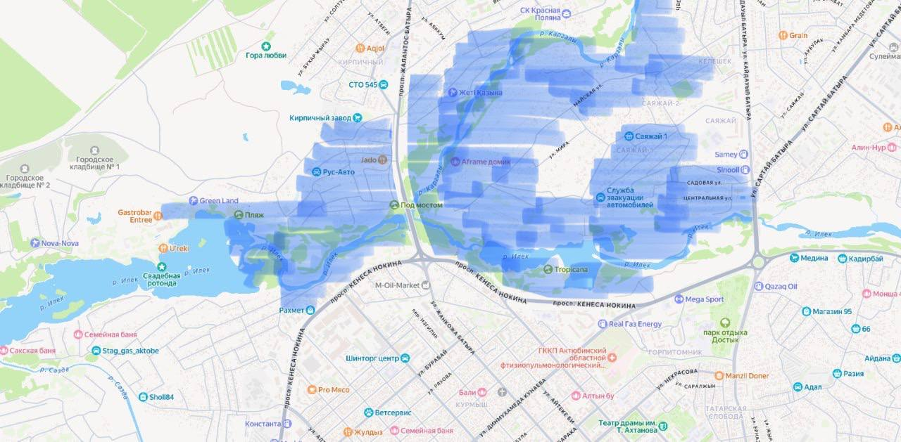
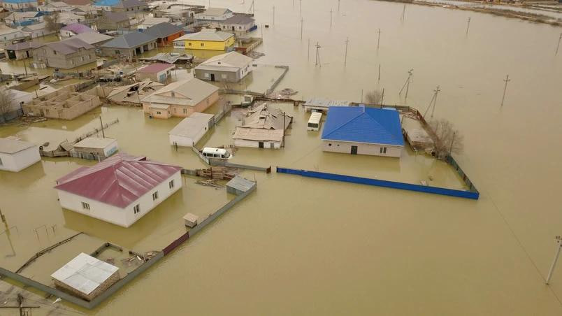
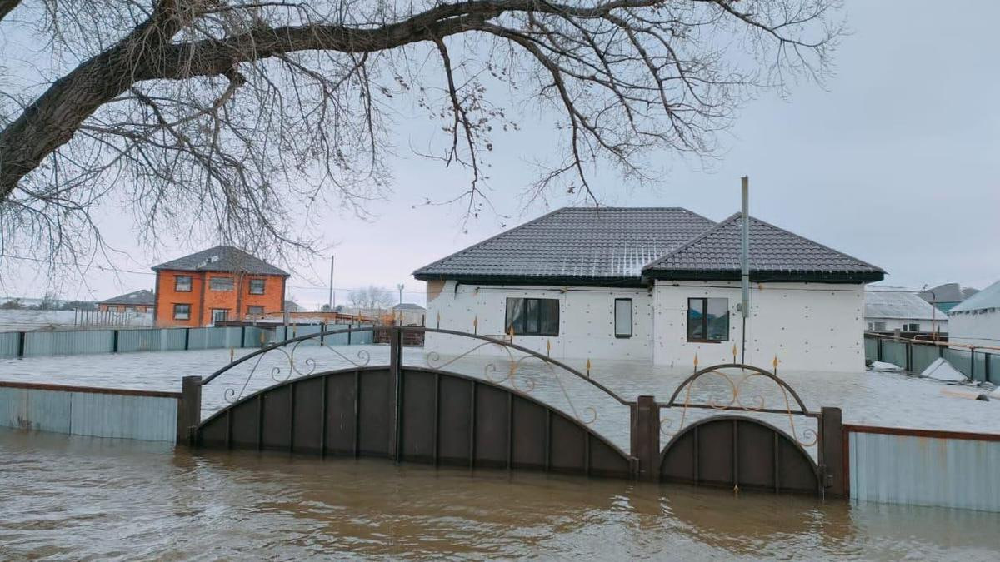
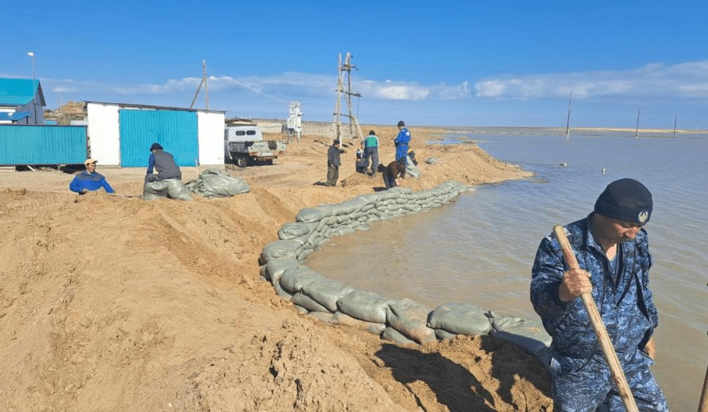

When floodwater arrives faster than a dam can pass it, engineers must choose who bears the risk — the structure, or the people living below it.
01
What the engineers were facing
The engineers were not prepared. The danger was never forecast.
Snow was not the problem. In spring 2024 the snow in the reservoir's catchment held 97 % of the normal water. In 2023 it held 130 % — and nothing happened. On 4 March Kazhydromet even reported 16–68 % less snow water than normal in the Ilek basin.
So the problem was not how much water came.
It was how fast it came.
Kazhydromet, spring forecast 04.03.2024 and annual snow bulletin 2024
FIVE CAUSES THAT CAME TOGETHER
1
Sudden thaw, 24 March
The weather turned warm very fast. The snow did not melt slowly over weeks — it melted almost at once.
“On 24 March it became warm suddenly and the snow began to melt.” — akim of Kobda district
2
Frozen ground
The soil went into winter wet, then froze deep. Meltwater could not soak in at all. Almost all of it ran over the surface.
This is what turns a normal snowpack into an extreme inflow.
3
Ice crust, up to 6.6 cm
Kazhydromet recorded an ice crust on the soil on 4 March, including in the Ilek basin.
The crust works like a plastic sheet: water does not stop, it slides straight into the rivers.
4
Rain on melting snow
Two days of rain fell while the snow was already melting.
Kazhydromet had described this exact scenario three weeks earlier: fast warming plus heavy March rain can create a snowmelt-and-rain flood.
5
Runoff from the steppe
Water did not stay in the river channels. It moved as a wide front across the open steppe.
“On 26 March meltwater from the steppe began to flood the city.” — akim of Aktobe
WHAT IT LED TO
1,700 m³/s
peak inflow — operator's account
~12 hours
for the reservoir to fill
200 million m³
inflow 27–29 March = 80 % of design volume
68 %
already full before it started
02
Two options — and each one has a victim
RELEASE
Open the gates now. Let the flood pass through at full speed.
✓ PROTECTS — THE DAM
▪ The water level never goes above the safe limit.
▪ The dam stays inside its safety margin.
▪ No risk that the dam breaks and floods the whole city.
✗ COSTS — THE PEOPLE BELOW
▪ The water reaches the houses at once.
▪ People are still at home — no warning has been given.
▪ No buses and no shelters are ready yet.
▪ People escape during the flood, not before it.
In the same region, a reservoir manager was later sent to court for not releasing water in time.
HOLD
Keep the gates almost closed. Let the reservoir take the flood.
✓ PROTECTS — THE PEOPLE BELOW
▪ The settlements stay dry.
▪ Homes and property are not touched.
▪ The hours gained can be used to warn and evacuate people.
✗ COSTS — THE DAM
▪ The water rises above the design level.
▪ The dam is 36 years old and was never rebuilt.
▪ If it breaks, the water is no longer controlled.
▪ An uncontrolled wave would reach the city itself.
One week later the Magadzhan dam upstream did break. Three settlements were flooded.
03
The decision — 28 March 2024

They took neither option cleanly. To enable the evacuation of residents downstream, the operator — together with local authorities — deliberately stored 15 million m³ above the reservoir's design capacity, accepting extra load on the dam to buy hours. Only then was discharge raised to 1,000 m³/s.
“As a result of the decision to release, the garden communities of Aktobe were flooded.”
Press service of the Prime Minister of Kazakhstan, 29 March 2024
FROM DENIAL TO EVACUATION ORDER
23 h 25 min
27 Mar, 22:38 — “This audio is false. The reservoir is only 68 % full.”
28 Mar, 22:03 — “We are forced to release water. Please evacuate.” Emergency evacuation starts.
Night 28 → 29 Mar — the gates are open, the water is released.
Timestamps from the official akimat channel. The exact hour the gate was opened has never been published.
04
What followed
PEOPLE IN EVACUATION CENTRES, 28→29 MARCH
689
garden homes flooded
2,870
evacuated within a day
0
lives lost
540 mln m³
passed through — 2.2 reservoir volumes

Map: the reservoir, the dam and the Ilek river below it

Google Maps satellite: the dam and its spillway

Map of the flooded areas of Aktobe

A whole settlement under water

Houses flooded to window level

Sandbag barriers — 157,278 sacks laid in the region
05
What should be done — anywhere, not only here
1 · Remove the problem before it arrives
▪ Empty the reservoirs before the flood season.
▪ Break the river ice early so it cannot form jams.
▪ Before 2025 the reservoirs were pre-emptied to free 382 million m³.
2 · Keep the structures under control
▪ Inspect and repair gates, cranes and dams every year — not after a disaster.
▪ In 2024 the crane needed to open the second gate failed at the worst moment.
▪ 537 structures in Kazakhstan still need repair; 322 threaten 1.5 million people.
3 · Be ready for the emergency
▪ Plan the evacuation before the water comes: routes, buses, shelters.
▪ Warn people early and clearly, so the state and the population understand each other.
▪ A warning works only if people believe it and can act on it.
Sources. primeminister.kz 29.03.2024 & 02.04.2024 (release decision, causation, 15 mln m³ above design capacity) · Ministry of Water Resources, gov.kz 02.04.2024 (245 and 246 mln m³) · Telegram @aqtobe_oblysy_akimdigi posts 3447, 3450, 3480, 3492, 3494 and @qr_tjm 10963 (publication timestamps) · Kazhydromet forecast 04.03.2024 and annual snow bulletin 2024 · Tengrinews 08.04.2024 (gates, gantry crane) · Kapital.kz 08.08.2023 (537 structures) · Bes.media 06.03.2025 (22 criminal cases) · Zakon.kz 07.02.2025 (conviction for failing to release) · ORDA 06.04.2024 (689 homes) · NSPE Code of Ethics, Canon 1 · RAEng, Engineering Ethics in Practice (2011)